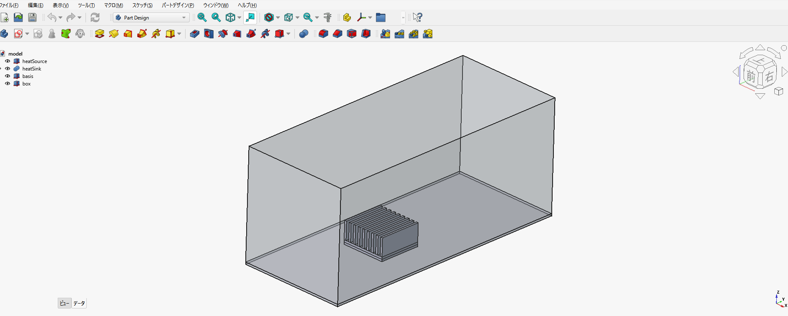
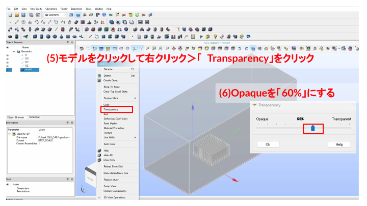
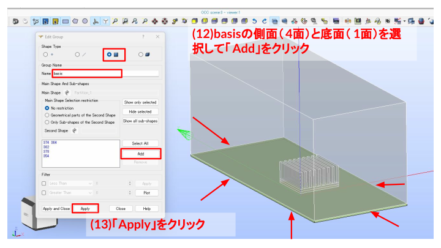
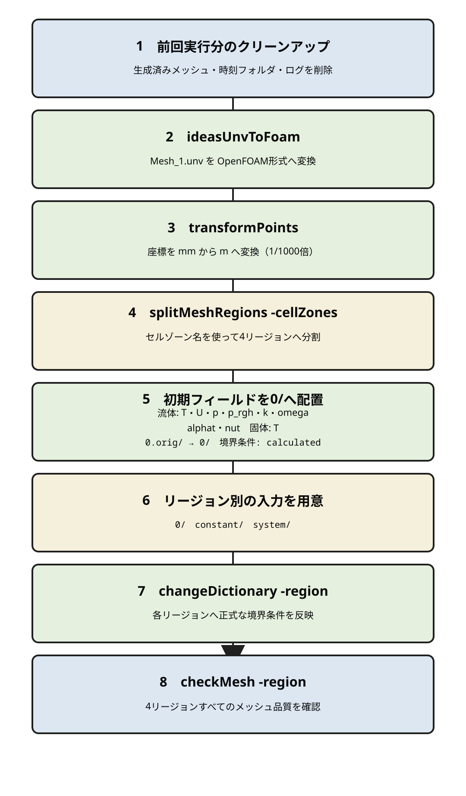

ヒートシンクを題材に、流体領域（box）と固体領域（heatSink・heatSource・basis）を分けたマルチリージョン用メッシュを作成する。OpenFOAM
13の foamMultiRun
で流体ソルバと固体ソルバを連成し、熱流体・固体連成解析につなげる。
モデル構成は次の4リージョンからなる。
box: 周囲を流れる空気の流体領域（240 × 102 × 103
mm）heatSink: フィン部分の固体領域heatSource: 発熱源となる底板の固体領域basis: ヒートシンクを載せる土台の固体領域
この演習で使うファイル・計算結果は、リポジトリの以下のフォルダにある。
| フォルダ | 内容 |
|---|---|
data/003_heatsink/sample/model |
FreeCADで作成したCADモデル model.FCStd
と、SALOMEへ読み込むために出力したSTEPファイル model.step
の保存場所 |
data/003_heatsink/run001_of13 |
SALOMEから出力した Mesh_1.unv と、OpenFOAM 13で
foamMultiRun を実行するケース一式（セットアップスクリプト
setup.sh を含む） |
data/003_heatsink/run001_of2512 |
同じメッシュをESI版OpenFOAM（v2512）の
chtMultiRegionFoam
で計算するケース一式（setup.sh・計算結果を含む） |
なお、CADモデルはFreeCADで作成しており、FreeCADの編集用ファイルを
model.FCStd、SALOMEへ渡す形状データを
model.step
として保存している。この演習では、作成済みのCADモデルから出力したSTEPファイルをSALOMEへ読み込み、OpenFOAM用のマルチリージョンメッシュを作成するところまでを行う。

この演習のOpenFOAM計算は OpenFOAM 13（www.openfoam.org 版）で行う。最終的には、マルチリージョンソルバによる熱流体・固体連成の計算を行う。


Geometry に変更する。
File > Import > STEP
をクリックする。model.step を選択し Open
をクリックする。No
をクリックする（Yesにするとモデルのスケールが変わってしまう）。
model
をクリックして選択し、右クリック > Transparency
をクリックする。Opaque のスライダを 60% にして
Ok
をクリックし、boxの中にあるheatSink・heatSourceの形状を確認する。
Explode（要素に分解） をクリックする。Solid にする。Apply and Close をクリックする。
この章ではこの操作は不要です。
FreeCADでモデルを作った時点で各ソリッドに heatSource /
heatSink / basis / box
という名前を付けてあり、その名前がSTEPファイルに保存されているため、Explodeした時点で自動的に同じ名前が付く。
Solid_1
のような名前になっている場合）だけ、分解された4つのソリッドを右クリック
> Rename で、それぞれ heatSource /
heatSink / basis / box
に名前を変更する。
Partition（分割） をクリックする。Solid にする。Apply and Close をクリックする。
Partition_1
の下に、4つのソリッドが子要素として作られたことを確認する。これらの共有面が、後でOpenFOAM側の流体-固体連成境界になる。
Explode をクリックする。Main Objectは
Partition_1、Sub-shapes Typeは Solid
にする。Apply and Close をクリックする。
Rename
で、heatSource / heatSink / basis
/ box にリネームする。
File > Save As... をクリックする。geometry_heatSink_001.hdf で
Save をクリックする。OpenFOAMでは境界条件は面の名前に対して設定するため、SALOME側で面グループを作り、後でOpenFOAMのパッチ名として使う。ここではまずbox（流体領域）の8つの境界面グループを作る。

Partition_1 を右クリック > Create Group
をクリックする。YMin
と入力する。Add をクリックする。Apply をクリックする。
ZMax の面を選択して Add →
Apply。
XMax の面を選択して Add →
Apply。
YMax の面を選択して Add →
Apply。
XMin の面を選択して Add →
Apply。
Shape Type を面にし、Name に
basis と入力する。basis
の側面4面と底面1面の計5面を選択して Add
をクリックする。Apply をクリックする。
Hide selected で非表示にする。
RIGHT view
に切り替え、heatSinkの表面（フィン部分）を選択して Add
をクリックする。Apply をクリックする。
Add
をクリックする。Apply をクリックする。
Add をクリックする。Apply and Close をクリックする。グループ名は
basis_top とする。
Partition_1 の box
配下に、YMin / ZMax / XMax /
YMax / basis / XMin /
heatSink / heatSource
の8グループが揃ったことを確認する。
File > Save As... をクリックする。geometry_heatSink_002.hdf で
Save をクリックする。
Mesh に変更する。
Mesh > Create Mesh
をクリックする。
Partition_1
が選択されていることを確認する。Assign a set of automatic hypotheses から
3D: Tetrahedralization を選ぶ。25（mm）に仮設定する。Apply and Close をクリックする。
Mesh_1 を選択した状態で Compute
をクリックし、メッシュを作成する。

Mesh_1 を選択した状態で Edit Mesh
をクリックする。NETGEN 3D Parameters_1 を編集し、Max sizeを
10、Min sizeを 0.25 に変更する。
Viscous Layers を追加する。
0.2、Number of layersを
3、Stretch factorを 1 にする。Face offset を選ぶ。Add
をクリックする。

Viscous Layers_2 を追加する。Add する。1、Number of layersを 3
にし、Extrusion methodは Surface offset + smooth
を選ぶ（heatSink・heatSourceの境界層と滑らかに接続させるため）。
Compute をクリックする。計算成功（Nodes
47701、Tetrahedrons 75244、Prisms 63612）を確認する。


Viscous Layers_3 を追加する。2、Number of layersを
3、Extrusion methodは Surface offset + smooth
にする。Add
をクリックする。
Apply and Close
をクリックする。
Compute をクリックする。計算成功（Nodes
52304、Tetrahedrons 76661、Prisms 72804）、エラーなしを確認する。

Mesh_1 を選択した状態で Create Sub-mesh
をクリックする。
box が選択されていることを確認する。3D: Tetrahedralization を選ぶ。10（mm）にする。Apply and Close をクリックする。

Mesh_1 を選択した状態で Compute
をクリックし、Sub-meshを反映してメッシュを再計算する。
Group_1（basisの底面）は不要なため、右クリック >
Delete で削除する。
File > Save As... をクリックする。geometry_heatSink_003.hdf で
Save をクリックする。
Mesh_1 を右クリック > Export >
UNV file をクリックする。Mesh_1.unv として、OpenFOAMの計算フォルダ
run001_of13 に Save する。SALOME で作成したメッシュを OpenFOAM 形式に変換して利用する。全体の流れは以下の通り。

data/003_heatsink/run001_of13この演習の計算はOpenFOAM 13で行う。まずOpenFOAM 13の環境を読み込む。
source /opt/openfoam13/etc/bashrc
cd data/003_heatsink/run001_of13ケースフォルダには、UNVメッシュの変換からリージョン分割・境界条件設定までを一括実行する
setup.sh を用意している。
bash setup.shsetup.sh の中では、以下の処理を順に行っている。

1. 前回実行分のクリーンアップ
2. ideasUnvToFoam Mesh_1.unv … UNVメッシュをOpenFOAM形式へ変換
3. transformPoints "scale=(0.001 0.001 0.001)" … mm単位からm単位へスケール変換
4. splitMeshRegions -cellZones … セルゾーン名を使い4リージョンへ分割
5. 0.orig/ のフィールドテンプレートを 0/ へコピー
流体は T・U・p・p_rgh・k・omega・alphat・nut、固体は T を用意し、各境界を calculated にしておく
6. 0・constant・system にリージョン別の入力を用意
7. changeDictionary -region <各リージョン> … 正式な境界条件へ上書き
8. checkMesh -region <各リージョン> … 分割後のメッシュを確認ideasUnvToFoam
でUNVメッシュをOpenFOAM形式に変換する。SALOMEでmm単位のモデルを作っているため、transformPoints "scale=(0.001 0.001 0.001)"
でOpenFOAMが使うm単位に変換する。splitMeshRegions -cellZones
は、UNVメッシュ作成時に付けたセルゾーン名（box・heatSink・heatSource・basis）を使ってメッシュを4つのリージョンに分割する。これにより、constant/<region>/polyMesh
と 0/<region>
が作成される。system/<region>
には、あらかじめ各リージョンの数値計算設定と境界条件辞書を用意している。system/<region>/changeDictionaryDict
に各パッチの境界条件を記述しておき、changeDictionary -region <region>
で 0/<region>
の各フィールドへ反映する。流体と固体の接触面には
coupledTemperature
を設定し、リージョン間で温度と熱流束を受け渡す。constant/<region>、数値スキーム・行列ソルバ設定は
system/<region> に用意している。
セットアップが完了したら、熱流体・固体連成ソルバを実行する。
foamMultiRun > log.foamMultiRun.of13 2>&1foamMultiRun が
system/controlDict の regionSolvers
を読み込み、box
を流体ソルバ、heatSink・heatSource・basis
を固体ソルバとして連成計算する。kOmegaSST）で速度・圧力・温度・乱流量を解き、固体側は温度を解く。maxCo 100 を使用する。なお
system/controlDict には maxDi 100
も書いてあるが、OpenFOAM 13の solid モジュールは
maxDi を読まず、固体側の時間刻み上限は
maxDeltaT
だけで決まる。この記述はv2512ケースとの対応を残すためのもので、OpenFOAM
13では効果がない。system/controlDict の設定により、時刻 2
から 60 まで2秒間隔で結果を書き出す。U = (0 -0.5 0) m/s（y方向へ0.5
m/s）、初期温度は 293.15 K としている。発熱源の設定は
constant/heatSource/fvModels、各リージョンの境界条件は
system/<region>/changeDictionaryDict
を参照する。foamMultiRun
は、初期の過渡でフィン近傍の境界層セルに負温度・速度スパイクが発生して発散する（v2512の
chtMultiRegionFoam は同条件で安定）。このため
system/box/fvConstraints
に温度制限（limitTemperature 280〜400
K）と速度制限（limitMag 5
m/s）を設定して安定化している。setup.sh から計算実行までは ./Allrun
で一括実行できる。計算は数時間かかるが、startFrom latestTime
のため、途中で止めても ./Allrun
の再実行で続きから計算される。同じメッシュをESI版で計算するケースを
data/003_heatsink/run001_of2512
に用意している。実行方法はOpenFOAM 13側と同じく ./Allrun
だが、ソルバも設定ファイルの置き場所も異なるので注意する。
cd data/003_heatsink/run001_of2512
. /usr/lib/openfoam/openfoam2512/etc/bashrc
./Allrun # setup.sh → chtMultiRegionFoam| 項目 | OpenFOAM 13（run001_of13） |
OpenFOAM v2512（run001_of2512） |
|---|---|---|
| ソルバ | foamMultiRun（モジュール式） |
chtMultiRegionFoam |
| リージョンの指定 | system/controlDict の
regionSolvers（box fluid; /
heatSink solid; …） |
constant/regionProperties の
regions (fluid (box) solid (heatSink heatSource basis)) |
| 乱流モデル | constant/box/momentumTransport（simulationType RAS;
+ model kOmegaSST;） |
constant/box/turbulenceProperties（RASModel kOmegaSST;） |
| 発熱源 | constant/heatSource/fvModels。type heatSource;
で Q を時刻テーブル指定 |
system/heatSource/fvOptions。type scalarSemiImplicitSource;
でエンタルピー h に投入 |
| 固体の時間刻み | maxDi は読まれない（maxDeltaT
のみ有効） |
maxDi 100 が有効 |
| 書き出し制御 | writeControl adjustableRunTime; |
writeControl adjustable; |
| 安定化の追加設定 | system/box/fvConstraints が必要（下の補足を参照） |
不要（同条件で安定） |
U = (0 -0.5 0) m/s）・初期温度（293.15 K）・maxCo 100・endTime 60・2秒間隔の書き出しも両者で揃えてある。setup.sh の流れ（ideasUnvToFoam →
transformPoints → splitMeshRegions →
changeDictionary）は共通である。
計算が進むにつれて、発熱源からフィン先端まで温度が上昇し、周囲の空気が対流で熱を運び去っていく過程をアニメーションで確認できる。